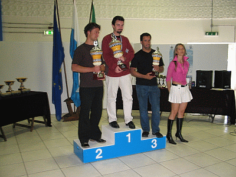

|
If anybody had told me that I, the sole American representative at the first EDC in Paris back in 1992, would eleven years later repeat that role at the 11th EDC in San Marino, I would have laughed. In fact, in 1999 in Namur, Belgium (that year's host for both EDC and WDC), if anybody had mentioned San Marino as a potential EDC, I would have laughed even then. Well, I'm not laughing any more. It really did happen. The 2003 EDC event was held in San Marino, the self-proclaimed world's oldest republic, and I am pleased to report that a great time was had by all. If you give them nothing else, you must give the Europeans credit for knowing how to pick an interesting and appropriate venue for a Diplomacy event. From the mirrored salons and red and gold gilt of the French Foreign Ministry's Conference Center on the Avenue Kleber in Paris, through the "Gibraltar of the North" Citadel in Namur, Belgium, to this year's site which was but a crossbow arrow's distance from San Marino's castle, the Europeans always known how to turn an interesting site into a dramatic event. I flew from San Diego to Rome via Chicago using American Airlines and took a series of progressively slower and cheaper trains to Rimini, the coastal Adriatic beach resort near San Marino. From there a taxi driver gave me his own personal version of the San Marino Grand Prix as we raced against the meter across the coastal plain toward the slopes surrounding the 2,000 foot mountain upon which San Marino's fortifications sit. At some point -- I'm not sure exactly where -- we left Italy and entered the Republic's domain. It's true. San Marino is small. I suspect that it is smaller than some American shopping centers or airports. The population is around 34,000, although many of these people are not citizens of the country. The average per capita income, most of which is derived from tourism, is around USD 34,500 a year -- one of the highest in Europe. There's a bit of industry and agriculture -- the local wine isn't bad -- but the driving economic force in San Marino is tourism. This is something the country shares with Europe's other mini-states such as Monaco or the Vatican City. San Marino is a collection of a dozen or so small villages, now mostly joined together, surrounding the fortress. The main road from Rimini leads to the fortress eventually, but not before the visitors, three million last year, are given ample opportunities to part with their euros. The driver dropped me at my hotel, which was a small place with a booming pizza business on the side. Did I say booming? According to the desk clerk at check out, they had sold 207 pizzas over the weekend. It had been a long haul from San Diego, especially the last eight hours of trains from Rome to Rimini, so I grabbed a shower and got some rest. In due course Giancarlo Ceccoli, the organizer and promoter of the event and guiding light and chief guru of the San Marino Diplomacy hobby, called me. Not long afterwards he showed up at the hotel and drove down the hill to the convention site. Although I must have passed this in the taxi on the way to the hotel, I had not thought twice of the large white blob of free form concrete with bits of glass here and there and odd-shaped additions stuck on here and there which was now in front of me. At first, I thought that it was a strange location for a Diplomacy event. Inside I discovered the event venue was actually a large hall that could easily hold several hundred people including their gaming gear. The rest of the building was devoted to a moderate size, very modern shopping center that catered to the locals and not the tourists, although anybody with money was more than welcome. It actually was a brilliant choice for a site because if you got bored with the gaming or got eliminated early, you could always go wander through the center. I got to know most of the merchants pretty well by the end of the event. I'd deliberately arrived a couple of days before the Diplomacy event (which followed the traditional one round on Friday, two on Saturday, and one on Sunday format) was to start, but there were already some Italian Dippers arriving. The number of Sammarinese Dippers was less than the number of Italians, and the number of Italians playing was less than the combined total of Brits, French, Swedes, and Germans. In fact, by the time the games got under way it looked pretty much like the same crowd that attended WDC in Denver, except the loud boorish Americans were replaced by smooth-talking and polite but equally backstabbing Italians! There's not much need to comment on the other national contingents that were in attendance since most of you reading this will have already met them. I do want to compliment the local Dippers and even the non-Dippers who were involved in the event. They were, without exception, friendly and helpful. As for the Italians, they were also friendly and helpful and more than capable of holding their own at the gaming tables. All in all, it was one of the most balanced Dip events I've ever attended. Bright and early the next morning (as bright and early as anything gets done over there) a couple of the Italians who were staying at my hotel who had also driven in early decided to go up to the fortress before the bus loads of tourists and day trippers from the beach towns invaded the place. I also wanted to see the fortress that I'd been reading about. Fortunately, they had been there before and knew the short-cuts, elevator locations, and ways to avoid the mobs, so they made great companions as we explored the place. The complex really consists of three separate towers, joined by a series of walls and such, located along a mountain top that overlooks the coastal plain below. You can pretty much explore at will the various small museums, the shops, a church or two, the shops, the town square, the shops, the ramparts, the shops, the parks, the restaurants, the shops, etc. --- well you get the idea. One guidebook described the place as a combination of Disneyland's Castle and Tijuana's Ave. Revolution. They weren't far off. There were some great photo ops and I got to try out my new digital camera. We had a fair sized lunch which is a meal that the Italians take very seriously. I bought a few trinkets, but I did not buy any of the country's biggest revenue producers which are stamps and coins. As the mobs of tourists -- there were many Germans and other Europeans but I didn't see or hear any Americans -- poured in the main gate (I counted 12 buses unloading groups as we left) we went the other way, tired but happy. I certainly was tired from all the climbing and cobblestone street crawling. The next day was the official beginning of the Con. While the locals scurried about hanging posters, setting up flags, and arranging the trophies (which were very, very nice indeed), I watched, observed, and talked up the locals. Sure enough, as the time for the first round approached the foreigners began to arrive. The French arrived en masse, under the benevolent guise of Yann Clouet who continues to look more and more like a Musketeer as he matures. The Swedes sort of wandered about doing what they always do, which is looking for a place to hide their cigarettes and cheap beer. The Brits, surrounding David Norman, just suddenly appeared. One small group that I didn't recognize immediately began working the crowd soliciting support for their yet to be presented bid to host the next EDC event in Germany. I won't bore you with the play by play of the next three days. If I'd won I might have, but since I didn't I won't. Suffice it to say that the caliber of play at EDC was, as always, just as good as it had been in Denver. There were a few glitches in getting things under way, but that's normal, especially for a first-time host. Host Giancarlo and his group (who were in fact a formal group complete with vests for the members) had put a lot of time and preparation into the event and it showed. Later, as I read the comments from some of the foreign attendees about the event I laughed to myself about their minor complaints about this and that. They were the exact same comments which I have made in the past about some of the events that they themselves had hosted. I know Giancarlo has even bigger plans for San Marino's future as a world Dip event host and I am sure that with the lessons he's learned from this year's EDC event that he and his organization would be capable of hosting a highly successful WDC class event. I'm getting ahead of myself. Let's go back to the games. After all, that's what these events are all about. After the first three rounds the top seven players went to the top board for the final round. The winner of the event would come from that board:
There were 42 players participating in the event. Complete EDC 2003 results are available at the ASG website. Additional results and pics are available including the Pulitzer Prize winning photo of me actually paying attention during a game! Congrats to the winners and condolences to the losers. No worries. I'm sure you'll get your just rewards sometime in the future.  Sasha Hingst presented the only bid for the next eligible EDC event on behalf of the German hobby and it was accepted without opposition. From what Sasha said it will be a very different kind of event, at least as far as the venue goes. The EDC business meeting was almost boring, especially when compared to the one in Paris, in 1992. Of those present, only Bjorn von Knorring and I had been around for the Paris event. Bjorn woke up long enough to second my comments congratulating the organization and those attending this years event for the mature and statesman like way they had conducted themselves. Certainly their peers in the EU could learn something from them. In a dozen years the EDC has come a long, long way. I'm pleased to have been able to report on their progress. In summary, despite a few minor problems that any first time host could have had, this year's EDC event was a superb effort by the event host, his staff, the site, and the host venue. The members of the ASGS and Sammarinese people are and should be proud of their event. It was equal to any European event I've attended and better than some world class events I've participated in. In the weeks to follow I would travel to some other great Italian cities: Rome, Naples, Ravenna, Lucca (yes, Lucca, I made it!) and I would walk the ramparts of other great fortresses in Dubrovnik, Malta and Carcassone. All told, the highlight of my 2003 trip was San Marino. To close, I'd like to thank all of those locals who were so generous with their hospitality and friendship.
|